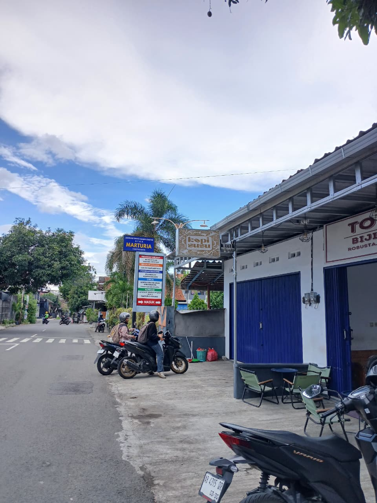

Segelas Nikmat, Temani Hari-Harimu
Perpaduan biji kopi pilihan dari petani lokal Indonesia dengan susu segar yang lembut. Satu gelas, rasa yang pas untuk menemani harimu.
Kenali Kami
Dari Biji Kopi Pilihan
Kami memilih biji kopi premium, menyangrai dengan hati-hati, dan menyeduhnya segar setiap hari. Rasanya kaya, aromanya harum, harganya tetap bersahabat.
Temukan biji kopi favoritmu
Segar di Setiap Tegukan
Capek, ngantuk, atau butuh teman ngobrol? Kopi susu kami siap menemani. Tersedia juga menu selain kopi.
Lihat MenuCari tahu
Tentang Kami
Bagi kami, menikmati kopi bukan sekadar tentang rasa, tetapi juga tentang menemukan pilihan yang sesuai dengan selera dan kebutuhan setiap orang. Karena itu, kami menghadirkan beragam pilihan produk dan minuman yang bisa dinikmati dalam berbagai suasana.
Mulai dari menikmati kopi favorit di rumah hingga bersantai sambil menikmati minuman di bar kami, Premium Beans Indonesia hadir untuk menemani momen sederhana menjadi lebih berkesan.
Baca SelengkapnyaMengenal Kopi Susu by Premium Beans Indonesia
Kopi Susu by Premium Beans Indonesia adalah anak dari PT Premium Beans Indonesia yang menjual berbagai macam jenis kopi mulai dari biji kopi, bubuk kopi, hingga minuman berbahan dasar kopi.
Semua biji kopi yang kami jual adalah biji kopi berkualitas yang berasal dari petani lokal Indonesia. Biji kopi diolah dengan cermat untuk menghasilkan rasa yang kaya dan aroma yang khas. Setiap produk dibuat dengan standar yang sama, sehingga pelanggan selalu mendapatkan cita rasa yang konsisten di setiap pembelian.
Dengan harga yang terjangkau, kami ingin menghadirkan kopi yang nyaman dinikmati oleh siapa saja, baik mahasiswa, pekerja, maupun para pencinta kopi yang ingin menikmati sajian berkualitas setiap hari.

Cabang Nologaten
Gerai Kopi Susu by Premium Beans Indonesia kami memiliki 3 cabang, diantaranya ada di Nologaten, Kasongan, dan Prambanan.
Khusus untuk cabang Nologaten, kami beralamat di Jl. Kedawung No.137, Nologaten, Caturtunggal, Kec. Depok, Kabupaten Sleman, Daerah Istimewa Yogyakarta 55281.
Patokan utama untuk menuju KOPI SUSU By Premium Beans Indonesia cabang Nologaten adalah tepat di depan Gereja Nologaten dan bersebelahan dengan Kampus Marturia (SAK Marturia). Lokasi ini berada di kawasan Nologaten yang terletak di sisi belakang Plaza Ambarrukmo (Amplas).
Kami buka setiap hari pukul 10.00 sampai 22.00 WIB kecuali hari Rabu yang buka lebih awal pukul 09.00 WIB. Anda dapat mencari lokasi kami melalui Google Maps atau klik di sini.

Berbagai Jenis Kopi Ada Di Sini
Kami menyediakan empat spesies utama kopi, yakni Arabika, Robusta, Liberika, dan Excelsa, dengan beragam karakter rasa dari mulai yang ringan dan asam segar sampai yang pekat dan pahit.
Kami memiliki Koleksi kopi asal tunggal (dari satu daerah) yang mencakup berbagai daerah penghasil kopi di Indonesia dengan metode pengolahan bervariasi, seperti proses kering, proses basah, proses madu, hingga fermentasi anggur yang menghasilkan aroma buah-buahan kompleks.
Kami menyediakan campuran biji kopi khusus yang dirancang untuk menghasilkan keseimbangan rasa yang pas saat dipadukan dengan susu maupun dinikmati sebagai espresso murni.

Konsep Bar Terbuka
Konsep bar terbuka di cabang Nologaten menghadirkan suasana kedai kopi yang hangat, transparan, dan interaktif, yang mana meja seduh menyatu langsung dengan area pengunjung.
Seluruh proses peracikan mulai dari menimbang biji kopi, menggiling, mengekstraksi espresso, hingga menuang seduhan manual di area slowbar dapat disaksikan secara langsung sambil menikmati aroma kopi segar yang memenuhi ruangan.
Untuk mendukung kenyamanan pengunjung, tersedia pilihan area duduk di dalam ruangan maupun di luar ruangan yang santai, lengkap dengan sofa empuk serta meja yang ergonomis untuk bersantai maupun bekerja (Work From Cafe). Selain itu, fasilitas di sini juga dilengkapi dengan akses Wi-Fi gratis, toilet bersih, serta area parkir gratis untuk pengunjung yang membawa kendaraan.
Keunggulan Kami
Mengapa Memilih Kopi Susu by Premium Beans Indonesia?
Harga Bersahabat
Menikmati kopi berkualitas tidak harus mahal. Kami menghadirkan kopi premium dengan harga terjangkau untuk mahasiswa, pekerja, dan semua pencinta kopi.
Pemesanan Mudah
Nikmati kemudahan memesan kopi melalui WhatsApp maupun online shop. Klik di sini untuk mengunjungi Tokopedia Premium Beans Indonesia. Kami juga melayani pesanan dalam jumlah banyak untuk berbagai acara.
Kualitas dan Kenyamanan
Setiap gelas diracik saat dipesan menggunakan biji kopi dan susu pilihan. Didukung pilihan pembayaran praktis serta layanan antar untuk kenyamanan pelanggan.
Biji Kopi
Produk Kami
- Semua
- Arabica
- Robusta
- Liberica
- Ekselsa


Menu Minuman
Temukan berbagai pilihan minuman kopi dan non-kopi yang siap menemani harimu.


Testimoni
Apa Kata Pelanggan Kami

Rahman
Pengunjung Lokal
Salah satu toko kopi brewery dan roastery yang menjual berbagai coffee beans dari Indonesia. Tempatnya enak bisa buat nongkrong dan ngobrol sambil melihat kendaraan berlalu lalang.
Lihat selengkapnya
Ifa
Pengunjung Lokal
Tempatnya asik di pinggir jalan gtu jadi selain bisa ngobrol dan ngopi bisa melihat lalu lalang kendaraan juga. Ada beberapa meja dan kursi. Masnya ramah dan sangat membantu menjelaskan. Mantap semiga semakin laris manis.
Lihat selengkapnya
Alianti Lita
Pengunjung Lokal
Butterscotch nya enak 🤤. Minumannya ada varian coffee, non coffee, moctail, manual brew dll, selain itu ada jajannya juga, cookies, french fries, dll. Oh ya bisa belanja oleh-oleh juga disini, tersedia biji kopi, kopi bubuk. Harga affordable, pelayanan memuaskan. Bisa bayar pakai qris (sangat membantu gen z yg cash less ini)
Lihat selengkapnya
Hiskia Rifaldini
Pengunjung Lokal
Suasananyaaa sangatt nyaman buat nongkrong sore sore ditemani hirup pikuk Nologaten, nongkrong dengan yg tersayang semakin menambah suasana yg nyaman ditemani secangkir strawberry milk yg sangat membuat nyaman hatiku💗.
Lihat selengkapnya
Yovie Jacobs
Pengunjung Lokal
Yuhuy bingitz. Bajawa Arabica nya terbaikkkk. Rapi bersih, Barista komunikatif, Koleksi premium beans seantero Nusantara.
Lihat selengkapnyaTanya Jawab
Pertanyaan yang Sering Diajukan
Struktur Organisasi
Susunan Organisasi Cabang Nologaten
Owner / Direktur
PT Premium Beans Indonesia
Kepala Cabang
Kopi Susu - Cabang Nologaten
Admin Cabang
Administrasi dan pelaporan operasional cabang.
Kasir
Mengelola transaksi pembayaran dan pencatatan penjualan.
Staf Gudang
Mengelola penerimaan, penyimpanan, dan persediaan produk serta bahan baku.
Barista
Menyiapkan minuman kopi dan non-kopi serta melayani pelanggan.
Kontak
Kontak Kami
Jl. Kedawung No.137, Nologaten, Caturtunggal, Depok, Sleman, Yogyakarta 55281